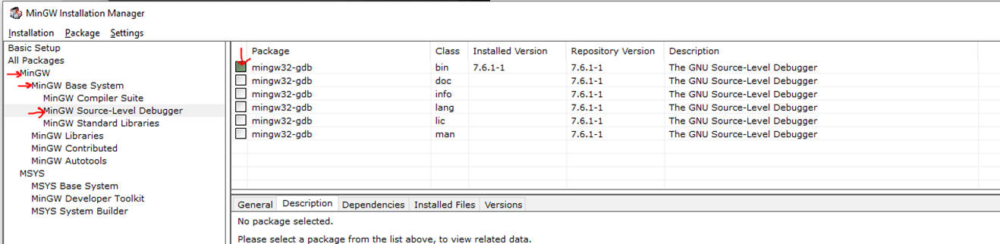
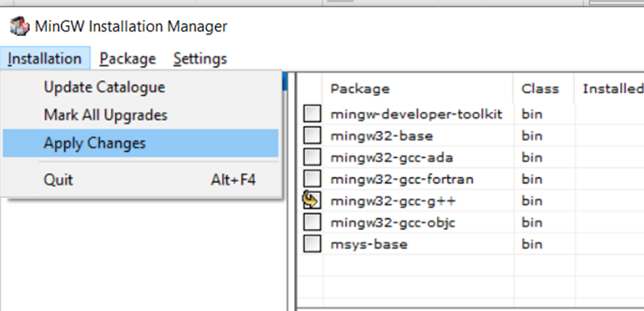

Start by installing a C-compiler and debugger. It can be downloaded here
After installation open MinGW Installation Manager
Select the gcc compiler for installation
simmilarly select the debugger for installation
Then Apply changes and the debugger and compiler will be installed
